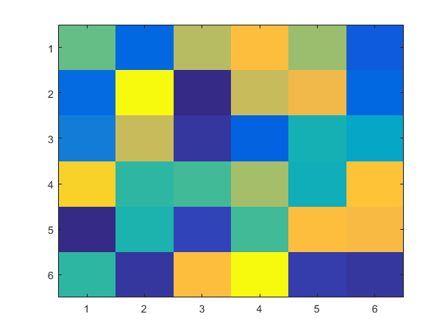
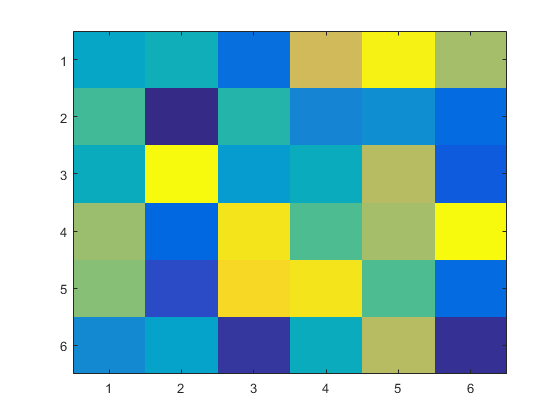
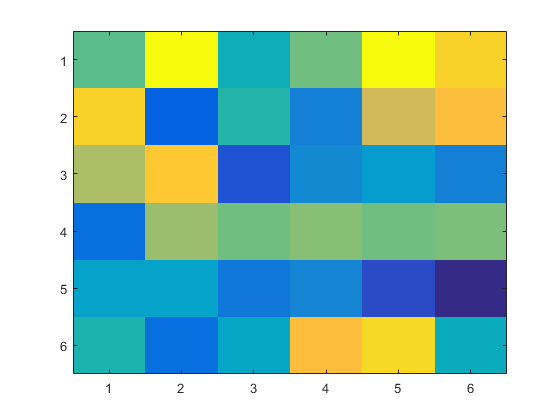
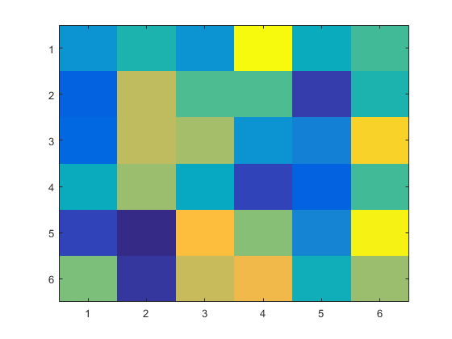

Write document with comment
File: sample_make_rtw_hook.m
Abstract:
This file is the book file to do the extra operation for code generation at diffrent stage
两端加' _ '表示斜体
两端加' * '表示粗体
- 在%后面加#生成按数字排列的列表标题
- 在%后面加*生成点开头排列的列表标题
Welcome to MATLAB! Just visit it!
There is one example here.
Please press Run Initiation Code to run the m script demo file.
for i=1:4 imagesc(rand(6,6)); snapnow; end   